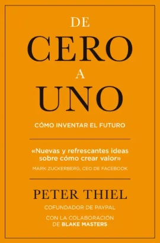
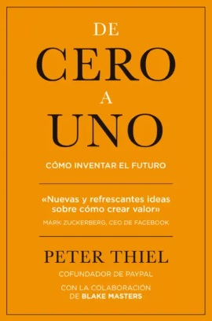

Cómo ganar amigos e influir sobre las personas
Convertido en un clásico de las relaciones humanas, los sólidos principios enunciados en
Cómo ganar amigos no han sido aún superados. Aplicando su gran conocimiento de las personas,
dotes de observación y experiencia profesional.
Carnegie consiguió crear un tratado de psicología cotidiana que es el origen del marketing
moderno.
Con más de 15 millones de ejemplares vendidos, Cómo ganar amigos ha ayudado a miles de
personas a alcanzar el éxito en su vida personal y profesional.
Este libro sólo será susceptible de cambiarte la vida si cumples este requisito mágico:
“tener un profundo e impulsivo deseo de aprender a aumentar tu capacidad para tratar con los demás”
Steve Jobs - Walter Isaacson
Walter Isaacson nos presenta la única biografía escrita con la colaboración de Jobs,
el retrato definitivo de uno de los iconos indiscutibles de nuestro tiempo, la crónica de la agitada
vida y abrasiva personalidad del genio cuya creatividad, energía y afán de perfeccionismo revolucionaron
seis industrias: la informática, el cine de animación, la música, la telefonía, las tabletas y
la edición digital.
Consciente de que la mejor manera de crear valor en el siglo XXI es conectar
la creatividad con la tecnología, Jobs fundó una empresa en la que impresionantes saltos de la
imaginación van de la mano de asombrosos logros tecnológicos.Jobs habla con una sinceridad a veces
brutal sobre la gente con la
que ha trabajado y contra la que ha competido.
De igual modo, sus amigos, rivales y colegas
ofrecen una visión sin edulcorar de las pasiones, los demonios, el perfeccionismo, los deseos,
el talento, los trucos y la obsesión por controlarlo todo que modelaron su visión empresarial
y los innovadores productos que logró crear.
Su historia, por tanto, está llena de enseñanzas
sobre innovación, carácter, liderazgo y valores.
La vida de un genio capaz de enfurecer y seducir a partes iguales.
De Cero A Uno - Peter Thiel
El próximo Bill Gates no diseñará un sistema operativo. Los próximos Larry Page
o Sergey Brin no crearán un motor de búsqueda. Y el siguiente Mark Zuckerberg no inventará una
red social. Si vas a copiar a estos chicos, es que no has aprendido de ellos.
Hacer lo que ya sabemos lleva al mundo de 1 a n. Genera un progreso horizontal añadiendo más de lo mismo.
Cada nueva creación, sin embargo, va de 0 a 1, es vertical e implica hacer algo que nadie ha hecho antes.
Si coges una máquina de escribir y construyes cien, has hecho un progreso horizontal.
Si coges una máquina de escribir y construyes un procesador de textos, has hecho un progreso vertical.
Este libro trata de cómo llegar allí.
Elon Musk: El empresario que anticipa el futuro
Esta es una mirada compleja a un hombre complejo, una moderna combinación de Thomas Edison, Henry Ford,
Howard Hughes y Steve Jobs. Su nombre es Elon Musk, y es el empresario que está detrás de Tesla Motors,
SpaceX y SolarCity, empresas innovadoras en sus respectivos campos ?la automovilística, la aeronáutica y
la energía? con las que Musk está consiguiendo hacer realidad lo que hasta hace poco no era más que
ciencia ficción
Vendió la primera empresa que creó, Zip2,
por 300 millones de dólares, y la segunda PayPal, por 1.500. A partir de ese momento, empezó a soñar a lo
grande: coches eléctricos a precios asequibles, cohetes espaciales, colonias en Marte, un tren capaz de
circular a 1.200 kilómetros por hora, baterías de litio en las que almacenar energía y poder prescindir
de las eléctricas?
Esta es la verdadera historia de la tumultuosa ascensión a las cumbres del mundo empresarial de Musk, un
hombre que ha revolucionado la industria americana y ha roto todos los límites de la innovación, ganándose
inevitablemente unos cuantos enemigos por el camino. Más que un inventor, más que un pensador, más que un
genio, Musk es el perfecto ejemplo del emprendedor que persigue cambiar nuestra vida cotidiana hasta
extremos que todavía no somos capaces de imaginar.
Einstein - Walter Isaacson
Número uno en ventas en Estados Unidos durante varias semanas, esta es la primera biografía de Einstein
publicada tras la apertura de todos sus archivos. ¿Cómo llegó Einstein a convertirse en una de las mentes
más deslumbrantes de la historia moderna, en el descifrador de los secretos del cosmos? Según Walter Isaacson,
la respuesta está en su actitud crítica, en su rebeldía ante las verdades impuestas y en su insaciable curiosidad, rasgos que también determinaron sus complicadas relaciones sentimentales y familiares. La vida de Einstein es un ejemplo fascinante de la relación entre la creatividad y la libertad.
Premiada y elogiada por la crítica, esta es la biografía definitiva de Einstein. Se trata de la primera aproximación biográfica al
gran genio de la física,escrita tras la apertura de todos sus archivos personales. Una obra completa,amena y rigurosa,en la mejor línea de la escuela angloamericana de grandes biografías.
{kind=link}
El método Lean Startup
El método Lean Startup supone un nuevo enfoque que se está adoptando en todo el mundo
para cambiar la forma en que las empresas crean y lanzan sus productos.
Eric Ries define una startup como una organización dedicada a crear algo bajo condiciones
de incertidumbre extrema.
Esto se cumple tanto para aquellas personas que trabajan en el garaje de su casa como para
un grupo de profesionales experimentados de una de las empresas que
aparecen en el ranking de la revista Fortune.
Lo que todos ellos tienen en común es la misión de traspasar la incertidumbre para encontrar el camino hacia un negocio sostenible.
El método Lean Startup es un conjunto de prácticas pensadas para ayudar a los
emprendedores a incrementar las probabilidades de crear una startup con éxito. No es
una fórmula matemática infalible, sino una filosofía empresarial innovadora que ayuda a
los emprendedores a escapar de las trampas del pensamiento empresarial tradicional.